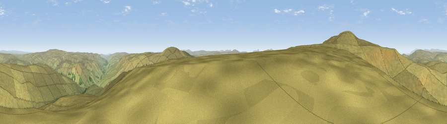

Little Shunner Fell
#10256 in England · top 27% of its area beats it · near CotterdaleWhere it is
The exact computed spot (SD 86110 97096). Click the marker for map links.
The view, rendered

A 360° render of this exact spot computed from the terrain model, tree cover and land cover — summer colours, afternoon light, calibrated against photographs of famous viewpoints. Real trees, hedges and buildings will differ in detail.
The panorama
Grey silhouette: terrain skyline in each direction (720 bearings, Earth curvature and refraction included). Dashed green: skyline with trees (+15 m) and buildings (+8 m) as obstacles. Blue strip: how far the ground is visible on each bearing.
Where the view opens
Wedge length = distance to the farthest visible ground on that bearing (vegetation-aware). Rings at 10, 25 and 50 km.
What fills the view
99% grassland ·
Angular shares of the visible panorama (visual magnitude), not map area. Landscape diversity 0.02 (0–1 Shannon).
Key numbers
More beautiful places nearby
The staircase of upgrades: each row has a higher view potential than everything closer. Driving times are estimates from straight-line distance, calibrated against real road routing — check an actual route before setting out.
| Place | Direction | Drive | Score |
|---|---|---|---|
| Great Shunner Fell | W · 1 km | ~3 min | 74.4 |
| Viewpoint c10024_7603 | NW · 7 km | ~15 min | 76.9 |
| Calders | W · 19 km | ~33 min | 79.0 |
| Whernside | SW · 20 km | ~33 min | 79.9 |
| Viewpoint near Bampton | WNW · 43 km | ~63 min | 80.4 |
| Ill Bell | WNW · 44 km | ~64 min | 80.9 |
| High Street (summit) | WNW · 44 km | ~64 min | 82.6 |
| Warton Crag | SW · 44 km | ~64 min | 83.2 |
54.36918, -2.21529 · source: osm peak · position refined by local search. Computed location — check access rights before visiting.